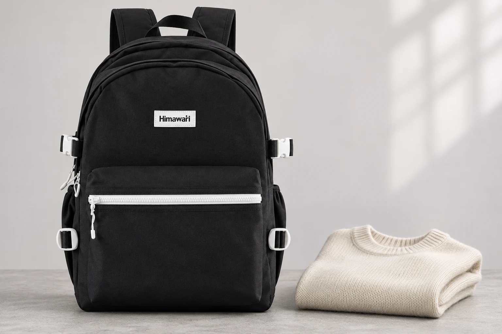
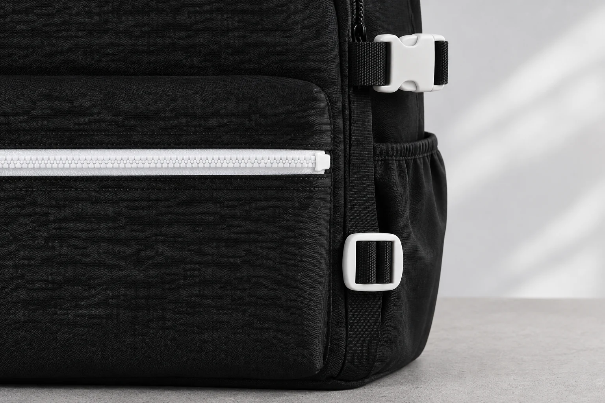

백팩 옆 끈을 조이면 가방의 폭도 줄어들까

짐이 적은 날 백팩 옆 끈을 짧게 맞추면 가방이 덜 불룩해 보일 수 있습니다. 그러면 상품 사양에 적힌 폭도 그만큼 줄어든다고 생각하기 쉽습니다. 하지만 조절한 끈의 길이와 가방 전체에서 가장 튀어나온 지점은 같은 수치가 아닙니다. 옆 끈으로 달라지는 곳을 읽으려면 어느 부품에서 어느 부분의 모양을 보고 있는지 먼저 정해야 합니다.
No.9290 블랙의 공개 외부 크기는 가로 30 × 세로 42 × 폭 18cm입니다. 정면 사진에는 위쪽의 흰색 버클과 검은 끈, 아래쪽 흰색 사각 조절 부품이 보입니다. 가운데 앞 포켓에는 흰색 가로 지퍼가 길게 놓여 있습니다. 이 글에서는 그 위치들을 기준으로 옆 끈과 몸판을 살펴봅니다. 특정 길이로 조였을 때 폭이 몇 cm 줄어든다는 실측 자료는 제공하지 않습니다.
끈이 짧아진 자리와 가방에서 가장 두꺼운 자리
가방 옆면의 한 구간을 모아도 몸판 전체가 같은 폭으로 움직이는 것은 아닙니다. 앞 포켓에 물건이 남아 있다면 그 부분이 바깥으로 나올 수 있고 윗부분이나 아래 모서리가 다른 곳보다 튀어나올 수도 있습니다. 끈이 놓인 높이만 보고 가방 전체의 두께를 설명하기 어려운 이유입니다. 사진을 볼 때도 버클 주변의 옆면과 앞 포켓을 따로 살펴야 합니다.
빈 백팩에서는 원단이 안쪽으로 접혀 들어가는 모양이 보일 수 있습니다. 여기에 물건을 담았을 때는 같은 모양이 유지되는지 다시 확인해야 합니다. 특히 단단한 물건의 모서리가 몸판을 받치고 있다면, 바깥의 끈만 보고 안쪽에도 남는 공간이 있다고 추측할 수 없습니다. 안에 든 물건의 위치를 모르는 상품 사진을 수납량 계산의 근거로 쓰기 어려운 것도 같은 이유입니다.
No.9290의 정면 사진만으로 조절 후의 옆면 전체를 확인할 수는 없습니다. 앞쪽에서 보이는 끈 끝의 길이가 같아도 반대편의 원단 주름과 옆 포켓의 상태는 가려질 수 있습니다. 몸판이 어느 곳에서 접히는지 보려면 옆면이 드러난 자료가 필요합니다. 온라인에서 고르는 중이라면 빈 상태와 짐을 넣은 상태를 각각 어떤 조건으로 촬영했는지도 문의할 수 있습니다.

위쪽 버클과 아래쪽 사각 부품을 나누어 보기
사진에서 위쪽 흰색 부품은 서로 맞물리는 결합부가 있는 버클입니다. 아래쪽의 흰색 사각 부품은 검은 끈이 지나가는 틀이 보입니다. 둘 다 흰색이라는 이유로 같은 여밈이나 같은 조절 동작으로 보지 않는 것이 좋습니다. 위쪽 결합을 풀어 입구 주변을 다루는 일과 끈이 지나가는 길이를 바꾸는 일은 구분해서 확인합니다.
아래 사각 부품이 보인다고 그 주변의 끈을 어느 방향으로든 당겨도 되는 것은 아닙니다. 실제 조절 방식은 제품 안내에서 확인해야 합니다. 원래 끈이 어느 틈을 지나고 있었는지 모르면 분리하거나 새 경로로 끼우지 않습니다. 사진으로 볼 수 있는 것은 부품의 위치와 끈이 지나가는 현재 모습이며 내부 고정 방식이나 허용 장력을 대신 설명하지는 않습니다.
양쪽 모양을 비교할 때는 내려온 끈 끝의 길이만 재지 않습니다. 옆 포켓 입구가 접혀 있는지, 지퍼 길을 천이나 끈이 가리는지, 한쪽 몸판만 안으로 들어갔는지를 함께 봅니다. 같은 길이로 보이게 맞추는 것이 실제 사용 목적에 맞는지도 생각해야 합니다. 부품을 조작하기 전에 현재 상태를 사진으로 남기면 무엇이 바뀌었는지 비교하기 쉽습니다.

18cm에서 끈을 줄인 만큼 빼면 될까
공개된 폭 18cm를 출발점으로 끈을 3cm 줄였으니 가방 폭은 15cm라고 계산할 수는 없습니다. 여기서 3cm는 계산 방식의 차이를 설명하려고 든 가정값입니다. 실제로 조절한 길이도 아니며 No.9290에서 확인한 변화량도 아닙니다. 끈이 지나가는 길이의 변화가 몸판 전체의 최대 폭 변화와 같은 방식으로 대응한다는 근거가 없기 때문입니다.
사물함이나 좌석 아래처럼 정해진 공간에 넣으려는 목적이라면 짐을 담은 실제 가방의 바깥 윤곽을 확인해야 합니다. 앞 포켓과 손잡이, 밖으로 나온 끈까지 어느 부분이 걸리는지 봅니다. 넣을 공간의 조건도 함께 확인해야 하므로 제품 사양의 폭 하나에서 임의의 수치를 빼는 방식으로 통과 여부를 정하지 않습니다. 들어갈 듯한 모습과 문까지 닫히는 상태를 각각 볼 필요가 있습니다.
상품 사진에서 가방이 얇아 보인다면 촬영 각도도 살펴보세요. 정면에서는 앞뒤 거리가 거의 보이지 않지만 옆모습에서는 앞 포켓과 등판 사이의 간격이 드러납니다. 사진 속 몸판이 작아 보이는 이유가 끈 조절인지 촬영 방향인지 먼저 구분해야 합니다. 같은 배율과 방향의 자료가 없다면 서로 다른 사진을 겹쳐 두께 변화를 재려고 하지 않습니다.
덜 불룩해 보이게 쓰고 싶은 날
목적이 치수 제한 통과가 아니라 빈 공간의 모양 정리라면 평소 넣는 짐으로 조건을 정할 수 있습니다. 자주 쓰는 물건을 넣고 가방을 닫은 상태에서 어디가 바깥으로 나오는지 봅니다. 제품이 허용한 조절 범위 안에서 끈을 다룬 뒤에도 필요한 포켓을 열 수 있는지 살펴봅니다. 내용물을 누르거나 입구를 억지로 닫아야 한다면 조절만으로 해결할 문제인지 다시 판단합니다.
조절이 끝난 뒤 남은 끈은 가방을 내려놓는 자리에서도 확인합니다. 걸을 때 몸판 가까이에 있던 끈이 바닥이나 의자 옆으로 늘어질 수 있습니다. 밖으로 남는 부분을 다루는 방법은 그 제품의 안내를 따릅니다. 임의로 자르거나 묶어 길이를 고정하기 전에 원래대로 조절할 수 있어야 하는지도 생각합니다.
No.9290의 옆 부품은 위치와 모양을 확인할 수 있는 실제 사례입니다. 끈을 움직인 뒤의 폭과 수납량은 별도의 확인이 필요합니다. 가방을 정리해 보이는 모습, 필요한 입구가 열리는 상태, 정해진 공간에 들어가는 외형을 각각 살펴야 조절의 목적이 분명해집니다. 끈 끝을 얼마나 줄였는지보다 내 사용에서 달라져야 할 지점을 정해 보는 편이 낫습니다.